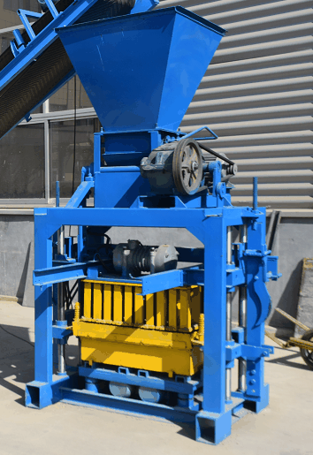
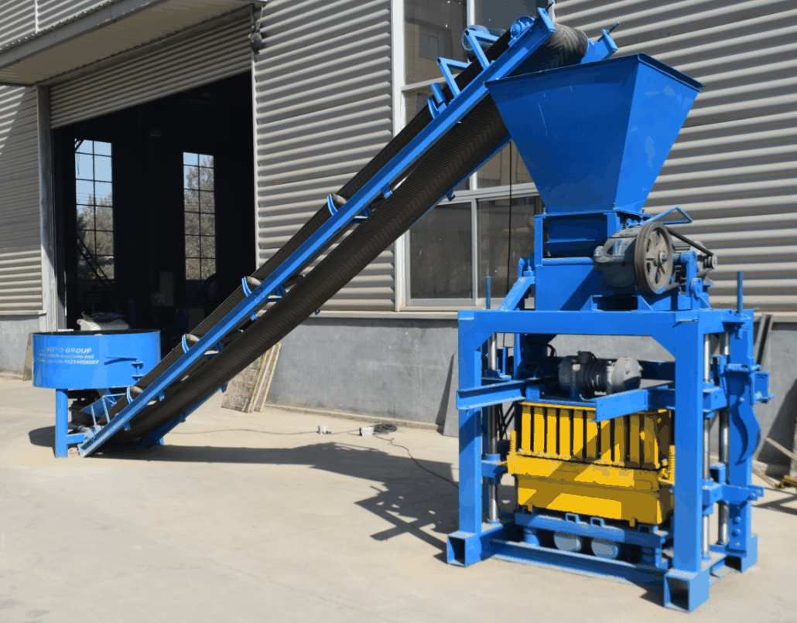
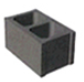
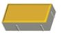
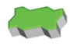
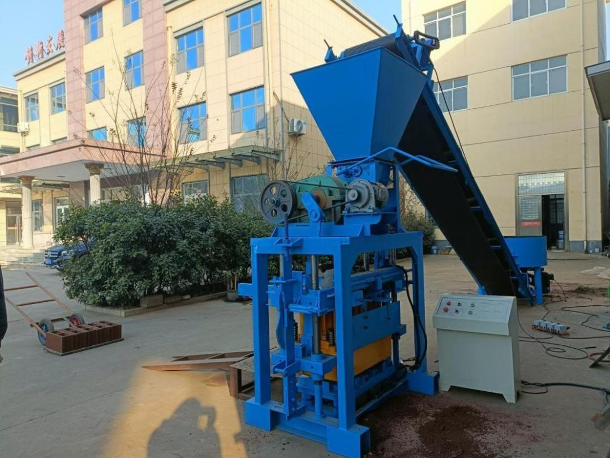
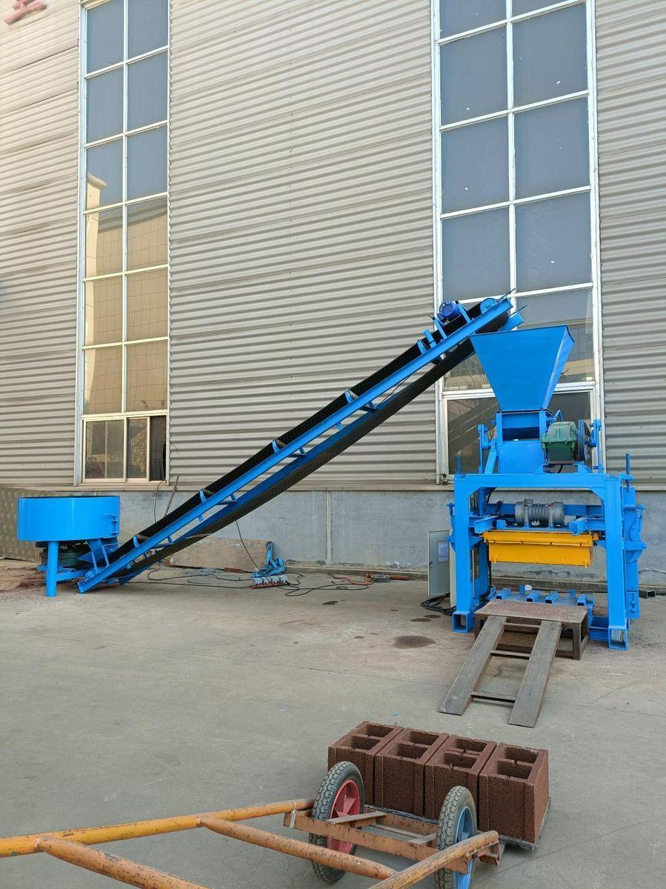

Most popular model in our range. 25% more output vs QT4-40, taller frame, optional 6 m conveyor belt.
The QT4-40A is the direct response to feedback from our African customers. We kept the proven platform of the QT4-40 and upgraded three weak points: the frame, the vibration motor, and the mould plate. The result is a semi-automatic block machine that delivers 25% more output, runs 30% longer between maintenance cycles, and produces sharper-edged sandcrete blocks that sell at a premium.


| Parameter | Value |
|---|---|
| Model | QTJ4-40A (export name QT4-40A) |
| Productivity per mould | 400 × 200 × 200 mm — 4 pcs / mould |
| Power | 9.6 kW |
| Cycle time | 30 – 50 seconds |
| Shift capacity | Approx. 2,800 blocks / 8-hr shift |
| Machine weight | 1,200 kg |
| Machine dimensions | 1750 × 1430 × 2800 mm |
| Shipping dimensions | 1750 × 1430 × 2000 mm |
| Shipping volume | 5 CBM |
| Pallet size | 850 × 450 × 20 mm |
| Parameter | Value |
|---|---|
| Model | JQ350 — compact pan mixer |
| Power | 5.5 kW |
| Cycle time | 5 minutes / batch |
| Mixer weight | 450 kg |
| Capacity | 350 L per batch |
| Overall size | 1200 × 1200 × 1170 mm |
| Shipping volume | 1.7 CBM |
| Parameter | Value |
|---|---|
| Power | 1.1 kW |
| Weight | 260 kg |
| Size | 6000 × 770 × 700 mm |
| Shipping dimensions | 3200 × 770 × 800 mm |
| Shipping volume | 2 CBM |
The QT4-40A takes everything that works on the QT4-40 and adds the option of a fully automated feed line. Add the 6 m conveyor belt and the material moves from the JQ350 mixer straight into the host's hopper — no need for a worker to shovel mix into the machine. This reduces the crew from 4 people to 3 and cuts the cycle bottleneck at the host's feed port.
The taller host frame (2800 mm vs. 2000 mm) leaves room for a deeper material hopper, which means fewer refills per shift. The shorter 30 – 50 second cycle adds roughly one extra mould cycle every 5 minutes compared to the QT4-40 — about 300 to 500 extra blocks per shift at the same labour cost.
Same mould range as the QT4-40. Daily output at 8 working hours.
| Brick Type | Brick Image | Brick Dimensions | Blocks per Mold | Blocks per Day |
|---|---|---|---|---|
| Hollow Brick (Option 1) |
 |
400 × 200 × 200 mm | 4 pcs | 2,400 - 2,900 pcs |
| Hollow Brick (Option 2) |
400 × 150 × 200 mm | 5 pcs | 3,000 - 3,600 pcs | |
| Hollow Brick (Option 3) |
400 × 100 × 200 mm | 7 pcs | 4,000 - 4,500 pcs | |
| Hollow Brick (Option 4) |
390 × 120 × 190 mm | 6 pcs | 3,200 - 4,000 pcs | |
| Floor Slab Brick | 500 × 150 × 200 mm | 5 pcs | 3,000 - 3,600 pcs | |
| Paver Brick (Holland Paver) |
 |
200 × 100 × 60mm | 14 pcs | 8,000-9,500 pcs |
| Paver Brick (Wave Paver) |
 |
225 × 112.5 × 60mm | 9 pcs | 5,600-6,500 pcs |
| Paver Brick (Figure-8 Paver) |
400 × 200 × 60mm | 4 pcs | 2,400-3,000 pcs |


Get CIF quote for your port within 24 hours.